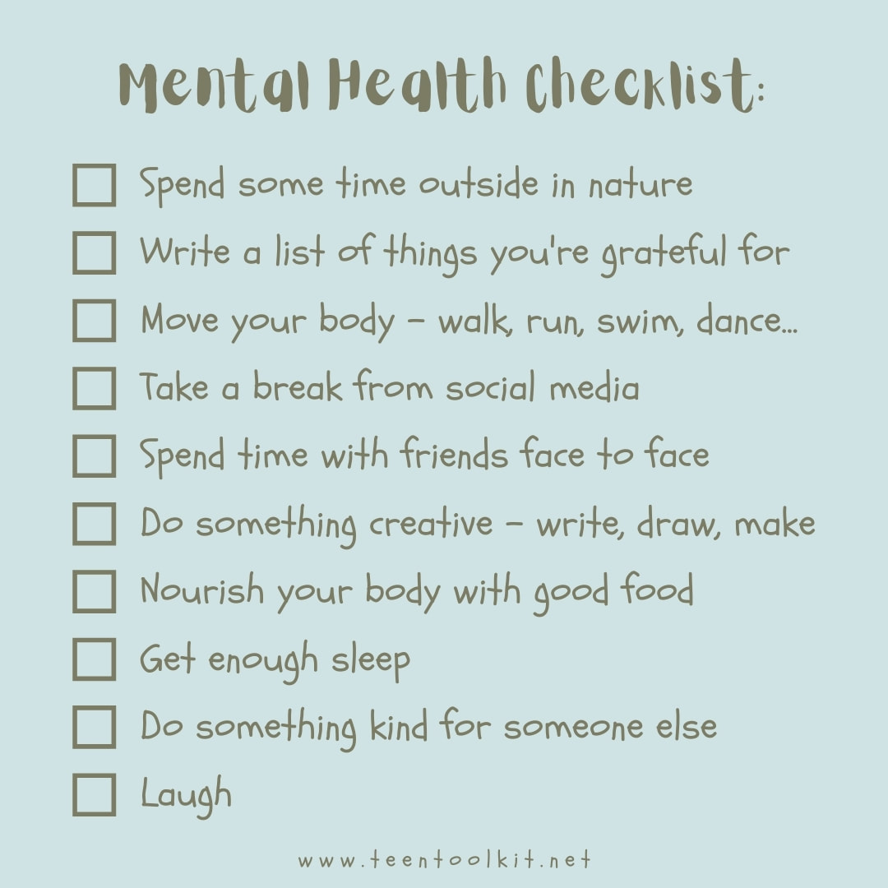

Self Care Tips
Physical Activity
Nutrition
Mindfulness
Daily Checklist
Journal Prompts
Write a letter to your younger self, offering advice and encouragement.
List all the things you're thankful for today.
What was the best compliment you received, and why did it mean so much to you?
Describe a time when you felt anxious. What helped you cope with your anxious thoughts?
What's one new skill you want to learn, and how will it help you?